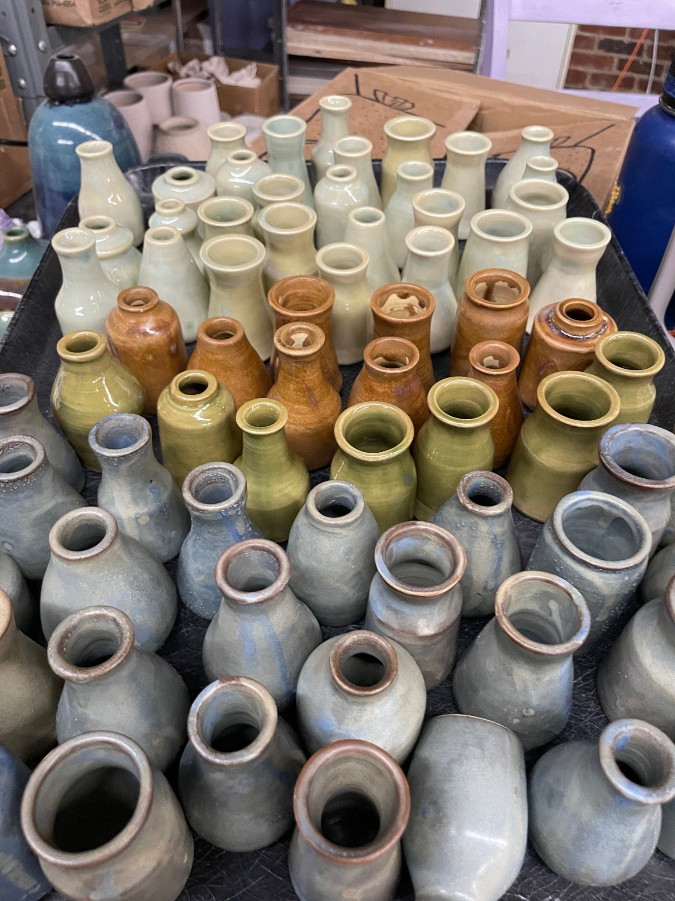
Mini Bottles
Bud vases and small vessels in soft blues, greens, clay tones, and seasonal glaze runs.
View Available Bottles on EtsyCedarleaf Ceramics creates hand-thrown pottery inspired by Blue Ridge light, creek stone, forest greens, ocean blues, and the useful beauty of objects made by hand.
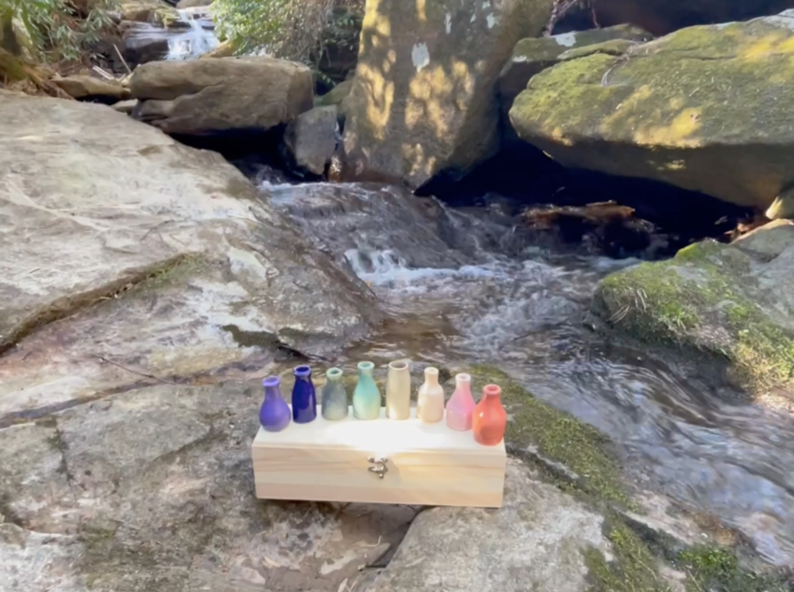
From tiny bottles and wedding favors to planters, jars, kitchen pieces, and homewares, the work is built around tactile forms, layered glazes, and pieces that feel easy to live with.

Bud vases and small vessels in soft blues, greens, clay tones, and seasonal glaze runs.
View Available Bottles on Etsy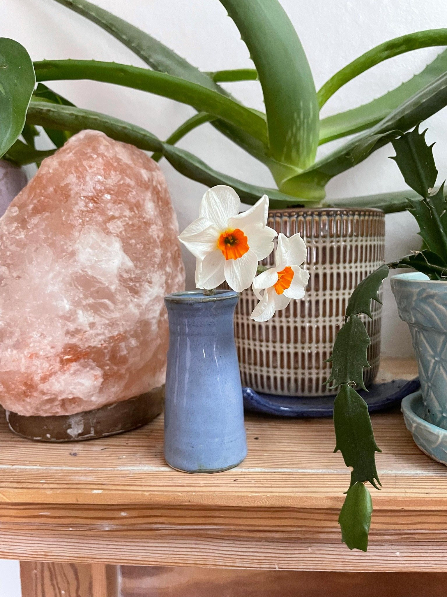
Planters, small garden wares, flower vessels, and pieces made to sit near leaves and windows.
View Zen Garden on Etsy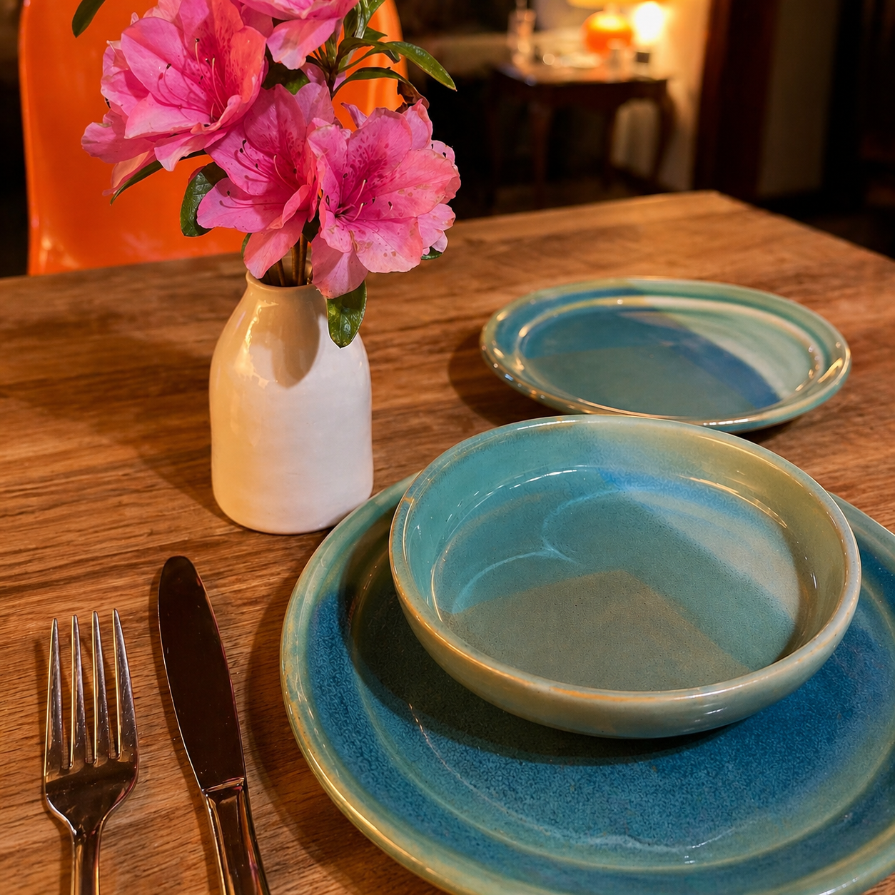
Functional pottery for counters, shelves, baths, tables, and places that need a little handmade gravity.
View Mountain Kitchen on Etsy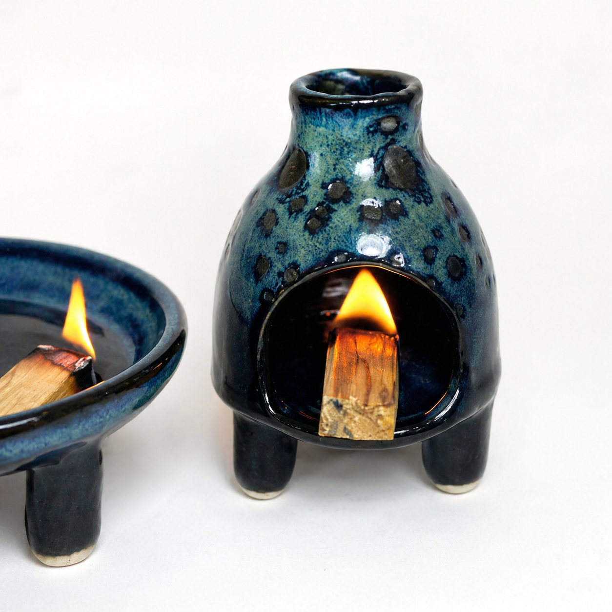
Curated incense sets, outdoor ashtrays, discreet herb storage jars and other keepsakes.
View Earth & Fire Products on Etsy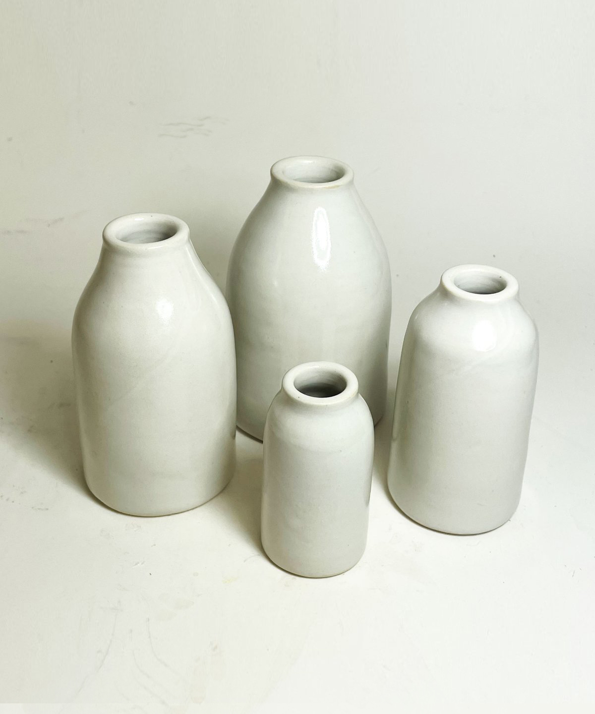
Hand-thrown mini bottles make memorable table décor, bud vases, favors, welcome gifts, and planner-friendly design accents. Each batch can be built around your palette, venue, season, and quantity.
This is the sweet spot: elevated enough for a wedding table, handmade enough to feel personal, and useful enough to live on a windowsill long after the weekend is over.
Every piece moves through wet clay, trimming, drying, bisque firing, glazing, and final firing — with small variations that make the work feel alive.
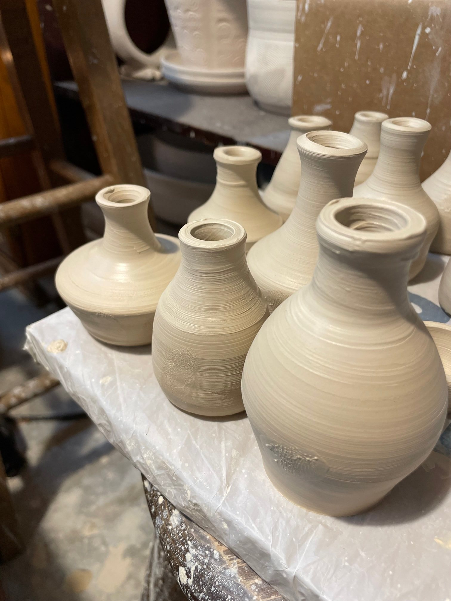
Fresh forms directly from the wheel, still holding the movement of the throw.
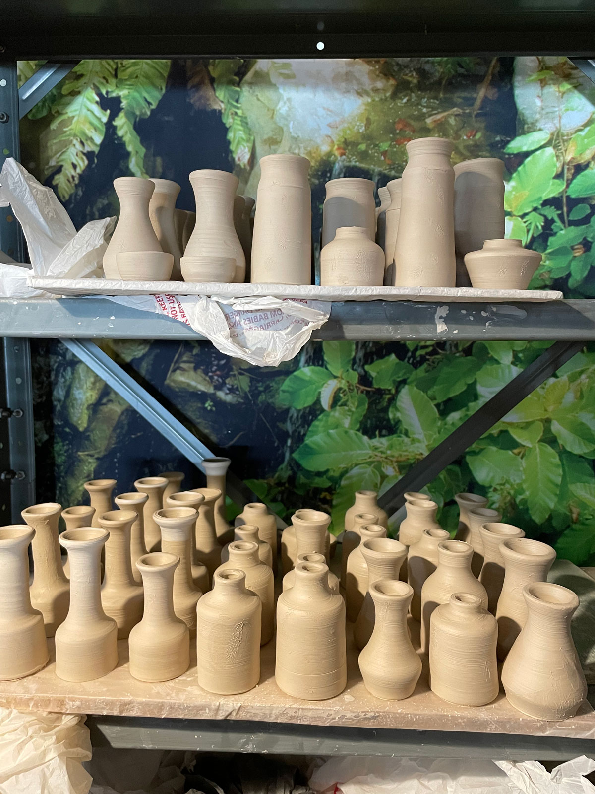
Small forms made in rhythm, then refined one by one.
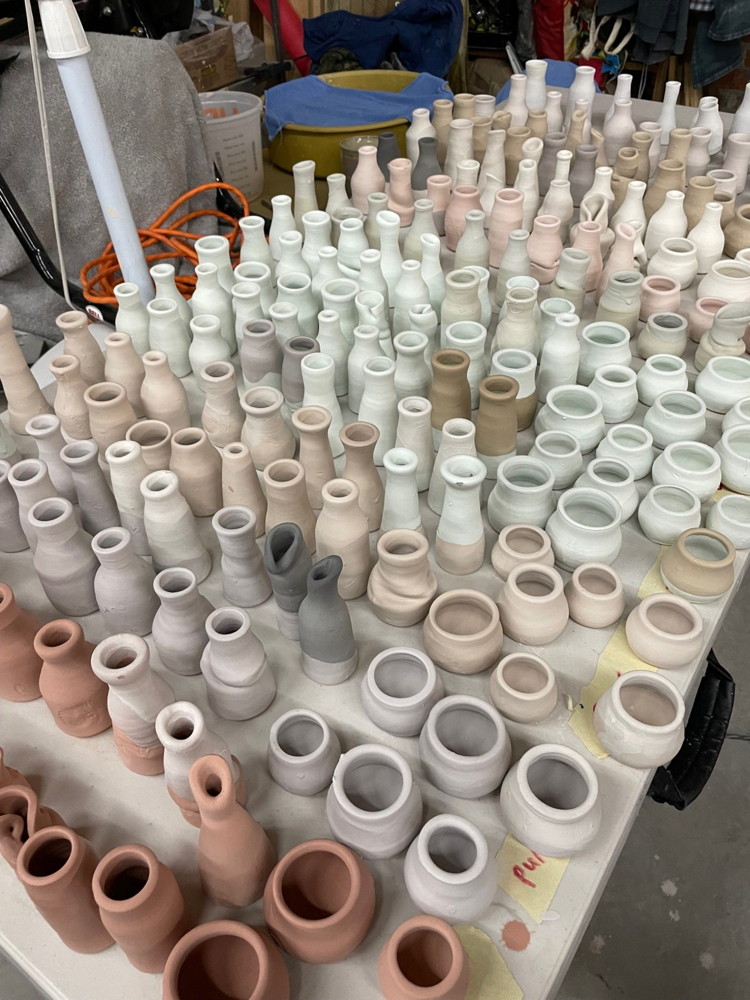
Soft blues, greens, clay, ochre, and mountain-water colors mixed into each collection.
Retail Locations
Cedarleaf pieces are carried by select boutiques, galleries, and small shops across the country — from mountain towns to coastal studios.
View Store GalleryPasadena, CA
Murphy, NC
Stonington, CT
Fairhaven, MA
Decatur, GA
and more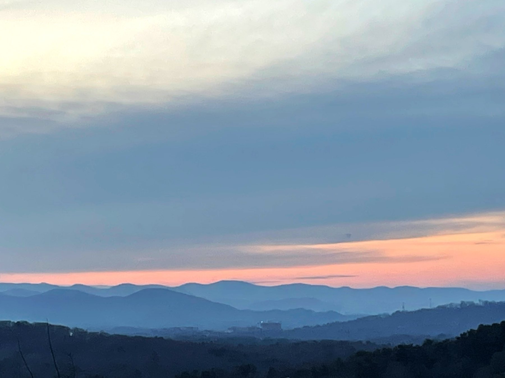
The palette comes from places I’ve lived and loved: Blue Ridge ridgelines, Smoky Mountain evenings, river rock, lush plants, fall leaves, and ocean air. The result is pottery that feels grounded, relaxed, and quietly special.
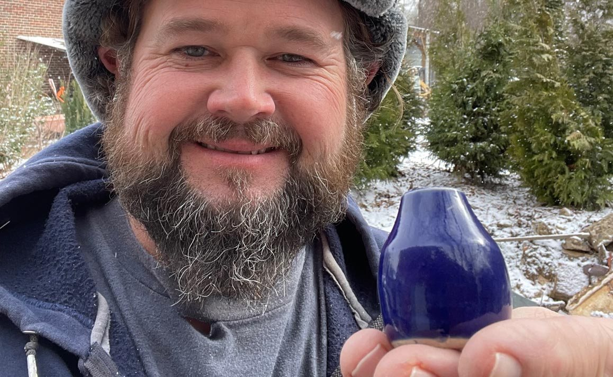
Hi, I’m Nick Cedarleaf. I’ve been working with clay for decades, and Cedarleaf Ceramics is my Asheville studio for functional pottery, small vessels, homewares, garden pieces, and custom event work.
My work is rooted in useful forms, calming color, and the kind of handmade object people want to touch, keep, gift, and remember.
Send a note with what you’re imagining — quantity, timeline, colors, venue style, and whether you need samples. For one-off pieces and current inventory, Etsy is the easiest place to start.